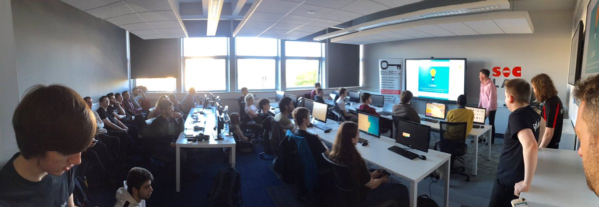
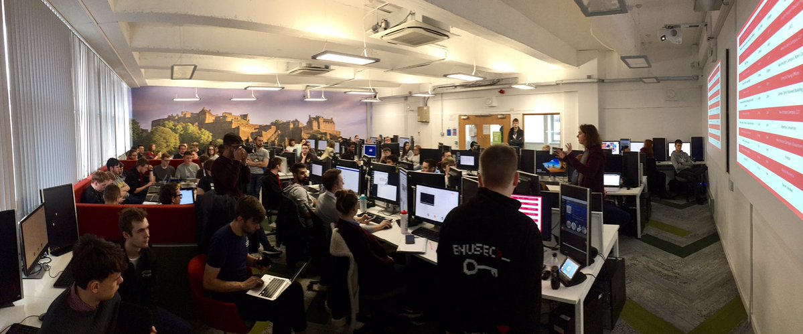

ENUSEC is a student society interested in all aspects of security. The society was started in 2015 by a small collective of students and staff associated with the excellent cybersecurity courses at Edinburgh Napier University. The goal of the society was, and still is, to provide the students and surrounding cybersecurity practitioners with an outlet for them further their learning and understanding as well as to foster a friendly community.
The society boasts over 70 active members, who have an exemplary track record of attending, presenting, hosting and competing at events worldwide. Despite our association with Edinburgh Napier University, our events and membership are open to all, student or not.
